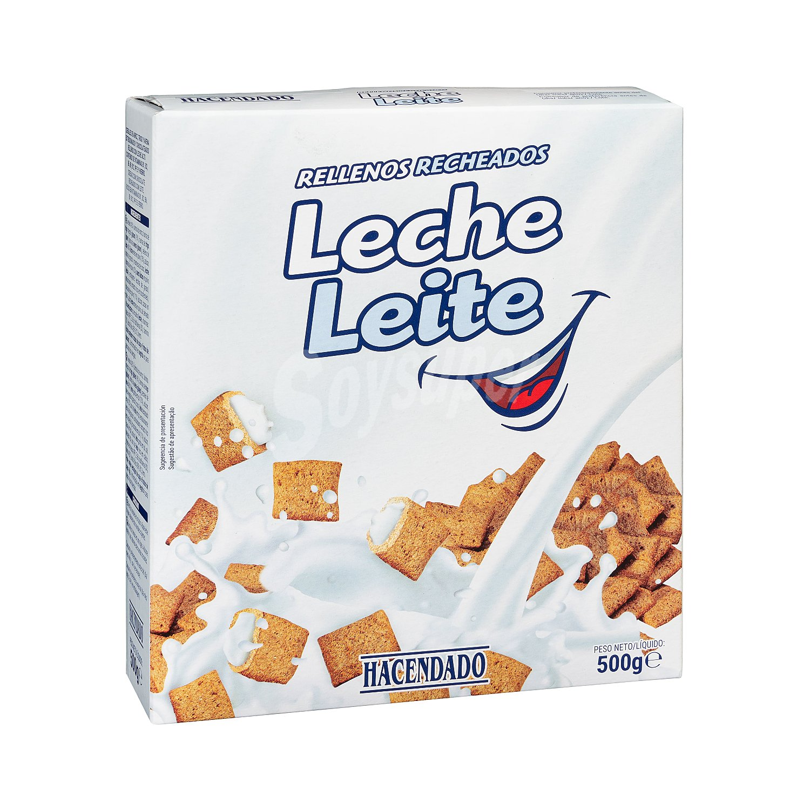

Rellenos de leche
Los rellenos de leche ocupan el primer lugar de esta lista. Será el factor nostálgico o el factor illegal, pero los considero de mis cereales favoritos. Recuerdo la primera vez que los probé; se situaban olvidados por el inquilino del apartamento de mi tía, en España. Sin duda alguna el relleno mega dulce, muy parecido a los Kraves, anteriormente probados en Honduras, hace que se encuentren en este lugar.
